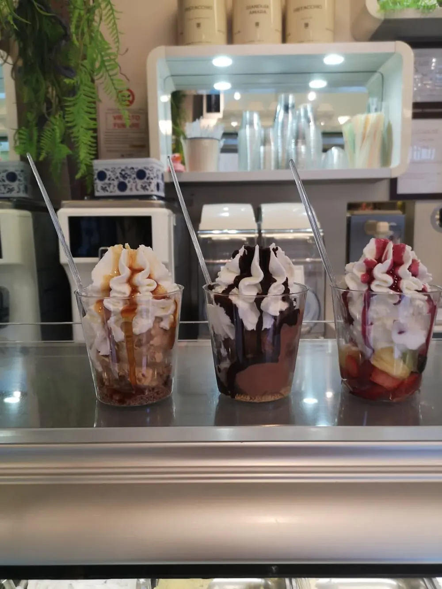
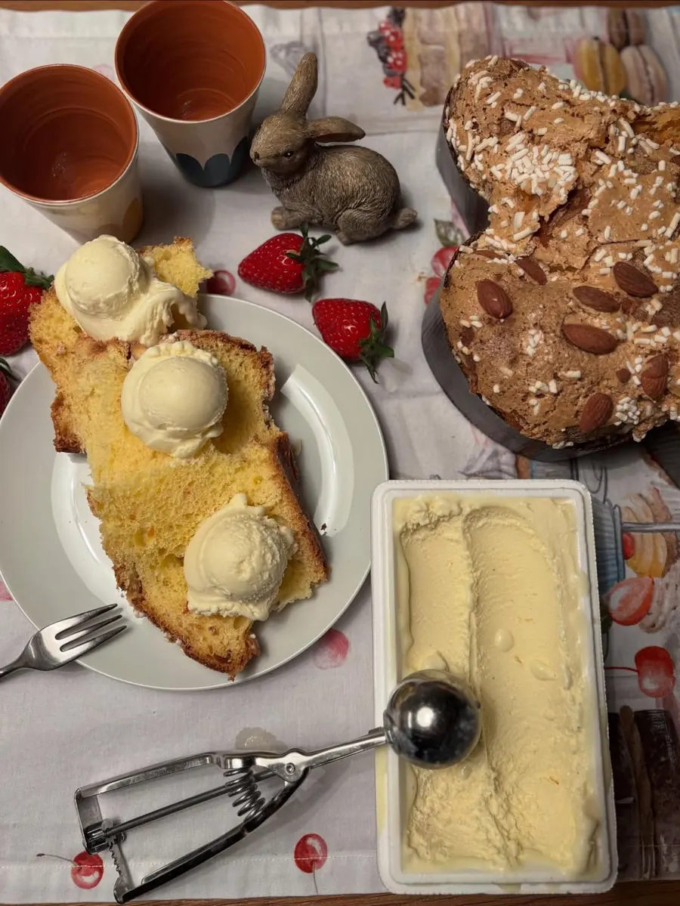
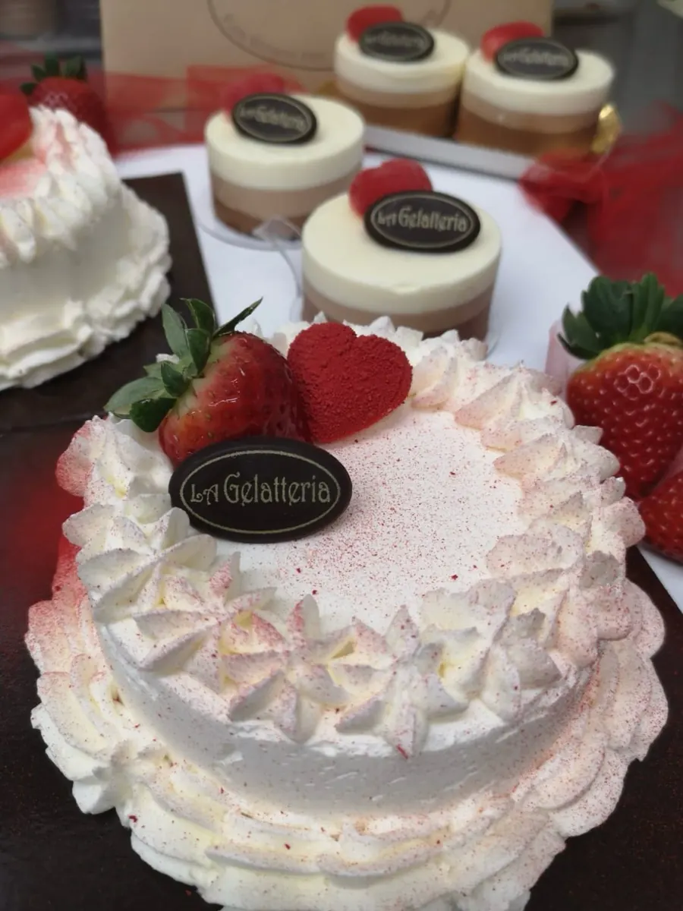
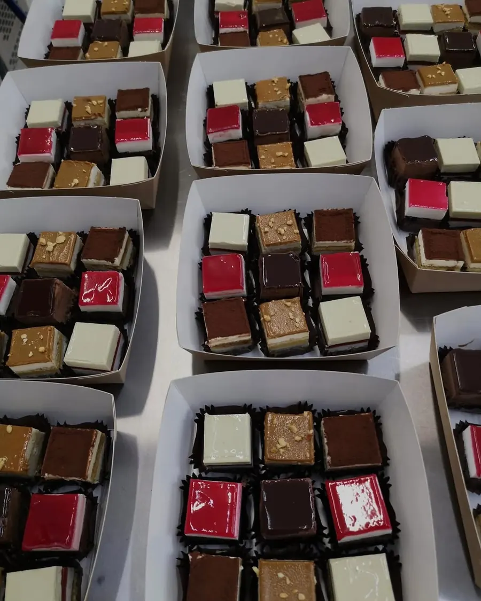
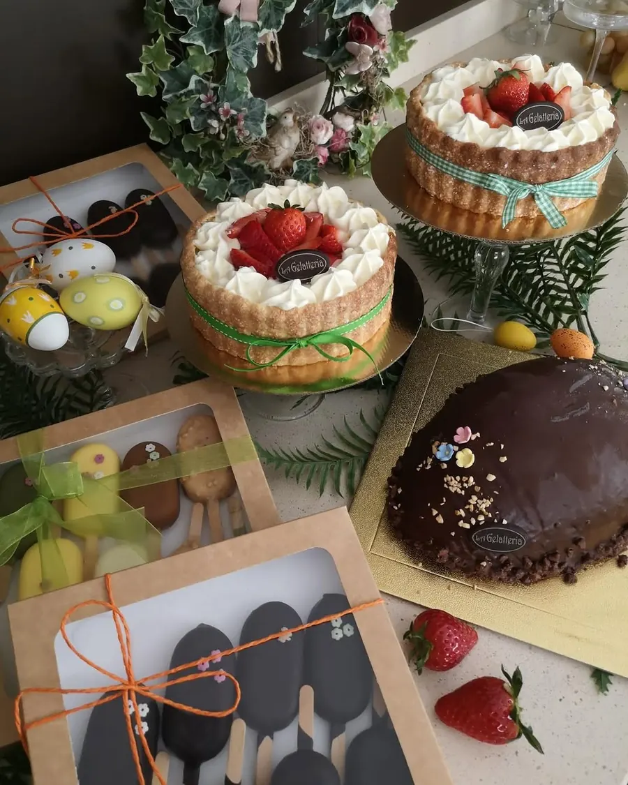
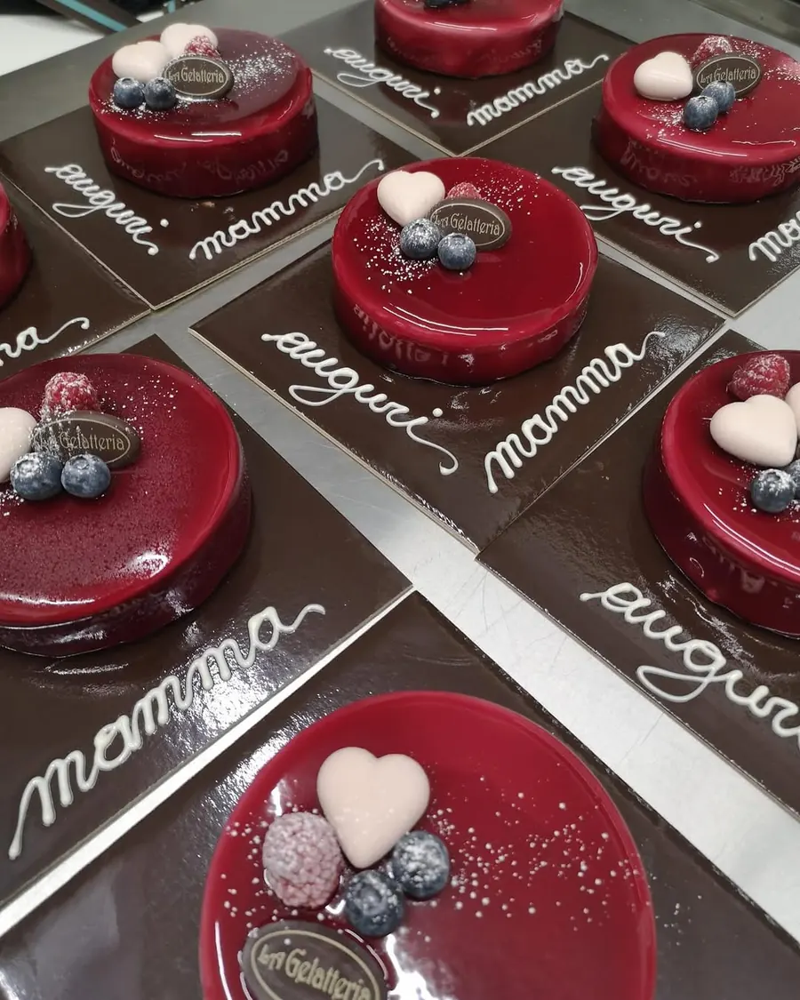

Senza glutine
Tutto.
Il gelato, i coni, le torte e le monoporzioni delle feste.
LA Gelatteria
Gelato da asporto in Piazza Papa Giovanni XXIII, davanti al Duomo di Villafranca
Creme, frutta e gusti del giorno, una vetrina intera senza lattosio, torte e monoporzioni per ogni festa. E, come sempre, tutto senza glutine.

Una vetrina per le creme e la frutta, con i gusti del giorno che cambiano spesso. L'altra è tutta per chi non prende il lattosio.
Tutto.
Il gelato, i coni, le torte e le monoporzioni delle feste.
Una vetrina intera.
E molte specialità delle feste hanno la loro versione senza lattosio: la torta mimosa per due, i ministecchi di Pasqua, le monoporzioni dell'8 marzo.

Nelle vostre recensioni su Google tornano spesso
Per ogni ricorrenza prepariamo torte, mousse e monoporzioni, e si prenotano per telefono. Ecco cosa è uscito dal nostro banco nelle ultime stagioni.
7 febbraio
Dopo la pausa d'inverno, quest'anno abbiamo riaperto il 7 febbraio alle 15. Il primo gelato dell'anno, in piazza.
14 febbraio

Torta yogurt e fragola, e mousse ai tre cioccolati in monoporzione.
8 marzo
Torte mimosa per 4–6 persone, e per due senza lattosio. Le monoporzioni: Pan di Spagna alla vaniglia, crema Chantilly e cuore alla nocciola, oppure crema alla vaniglia e cuore al lampone, senza lattosio.
19 marzo

Mini mousse da regalare a lui (che poi le divide con voi) e coppe golose da condividere, anche da asporto.
Pasqua

Charlotte alle fragole, ministecchi anche senza lattosio e lo ZuccUOVO al cioccolato. E aperti a Pasqua e Pasquetta, per il gelato accanto alla colomba.
Festa della mamma

Mousse al cioccolato ruby, gelè al mirtillo e glassa ai frutti di bosco.
La prossima festa
Le specialità delle feste si prenotano per telefono, anche nella versione senza lattosio quando c'è.
Chiama 340 762 8211«Non una vastissima scelta di gusti (meglio pochi ma buoni) ma decisamente buoni. Consiglio mela verde.»
Shez L., su Google
«Ottima varietà di gusti, gelato molto buono, torte e praline fantastiche.»
Giusy R., su Google
«Il gusto c’è il gelato è fresco e cremoso molto buono»
Giuseppe M., su Google
«Lo staff è dinamico e preparato vista l'alta affluenza.»
Marco T., su Google
Orari qui sotto
| Lunedì | 15:00–23:00 |
|---|---|
| Martedì | 15:00–23:00 |
| Mercoledì | 9:30–12:30 15:00–23:00 |
| Giovedì | 15:00–23:00 |
| Venerdì | 15:00–23:00 |
| Sabato | 9:30–12:30 15:00–23:00 |
| Domenica | 9:30–12:30 15:00–23:00 |
Nei mesi freddi la sera possiamo chiudere prima, e ogni inverno ci prendiamo una pausa: avvisi e riapertura li trovi su Instagram.
All'angolo della piazza, davanti al Duomo e a due passi dal Castello. Siamo una gelateria da asporto: niente tavoli, c'è tutto il centro per passeggiare.
Apri in Google Maps